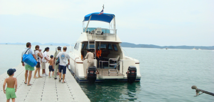
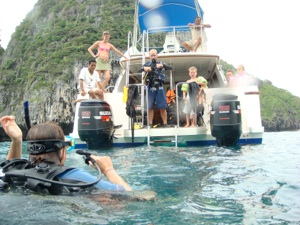
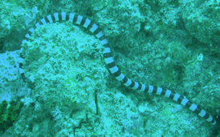

En Dag på Phi Phi Islands

på rundtur i the Andaman Sea - Se vores billeder her
søndag den 4. november 2007

Det er søndag og vi har besluttet at tage på tur i den thailandske skærgård, hvor fantastiske klippeformationer skyder lodret op fra havet. Vi har lejet vores egen båd og vi har vores egen dykkerinstruktør med på turen.
Det er tid til vores første dyk - Dorte og Michael har været så søde at tage børnene, så vi kan komme under vand efter ca. 3 års pause. Vi sejler i ca. 1 time, før vi når vores bestemmelsessted ved Phi Phi. Så er det på med udstyret, vinke til børnene og krydse fingre for at man kan huske alting - det kan vi heldigvis.

Vi dykker over smukke “bukkekoraller”, ser trompetfisk og muræner og vi ser vores første Leopard haj. Instruktøren vælger at holde sikkerhedsstop lige over hajen, der sover ganske fredeligt. Michael og Oliver møder os med snorkler og får set hajen.
Efter dykket sejler vi til “ The Beach”. Der ligger ca. 25 både, der besøger den “øde” strand, hvor Hollywood filmen er optaget. Vi tager videre til Phi Phi Don, den største af øerne. Det er et turisthelvede. Det vælter ind med charterbåde, og det paradis, som Dorte og Michael besøgte for 8 år siden har ændret sig meget. Alt er efter Tsunamien bygget op i cement, men uden den store planlægning og æstetiske sans.

Da vi kommer tilbage, møder vi Viola og de andre med snorkel og finner. Ved ikke om jeg selv turde hoppe i åbent hav i hendes alder ??? Så vender vi hjem, men forinden får børnene selvfølgelig lov til at styre den store motorbåd.
Vi slutter den skønne dag med en masse kølige drinks, mens børnene leger i poolen. Vi er alle dejlig trætte efter en dejlig dag på havet.
Vores båd havde 2 gange 225 hestekræfter, så vi sejlede med 28 knob, hvilket betød at vi var på Phi Phi på 50 min.
Vores dykkerinstruktør hed David og var fra USA.